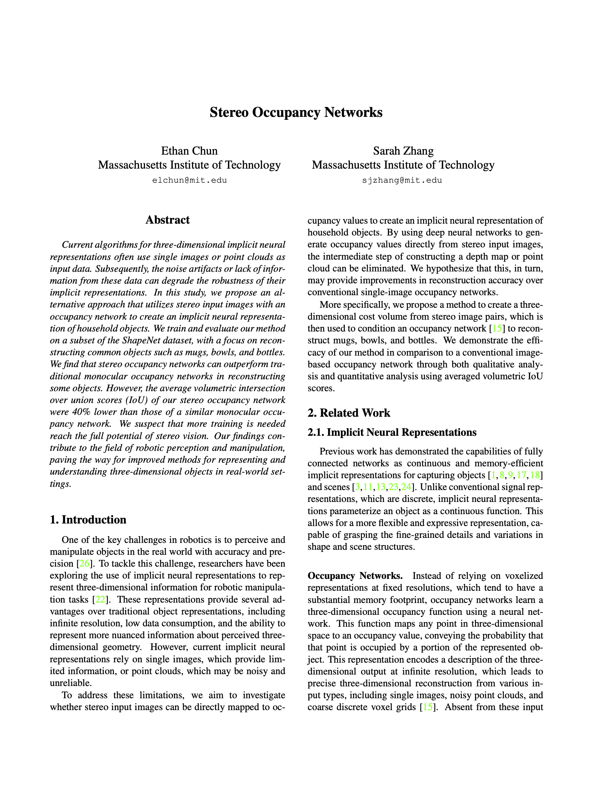
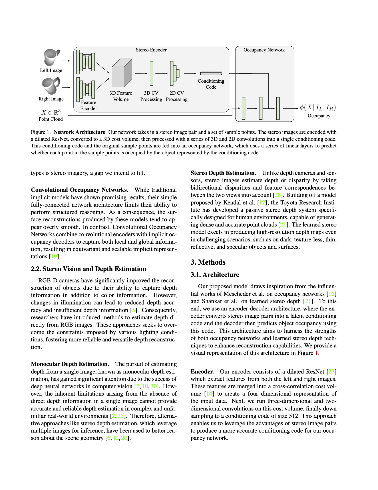
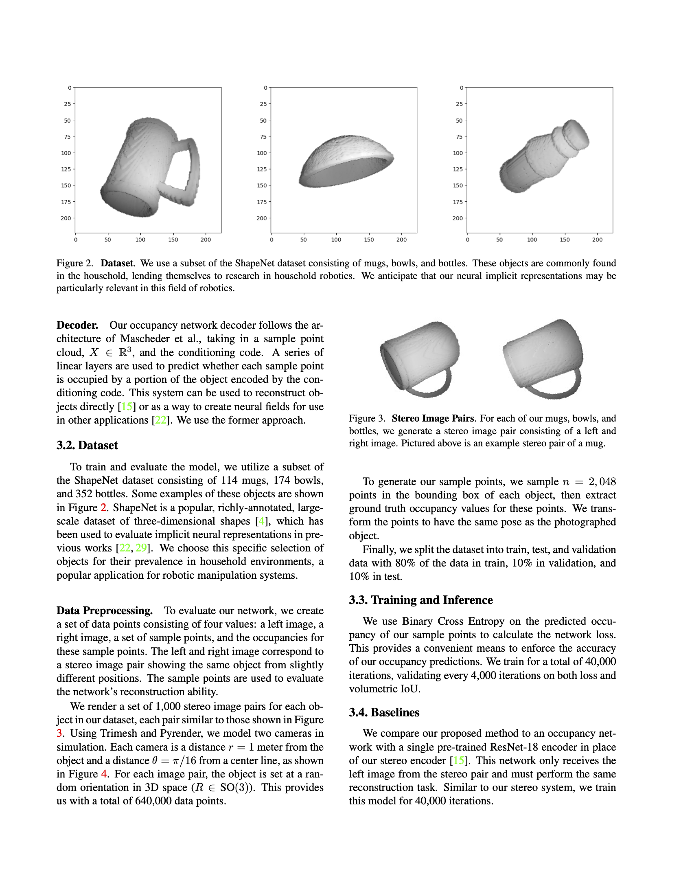
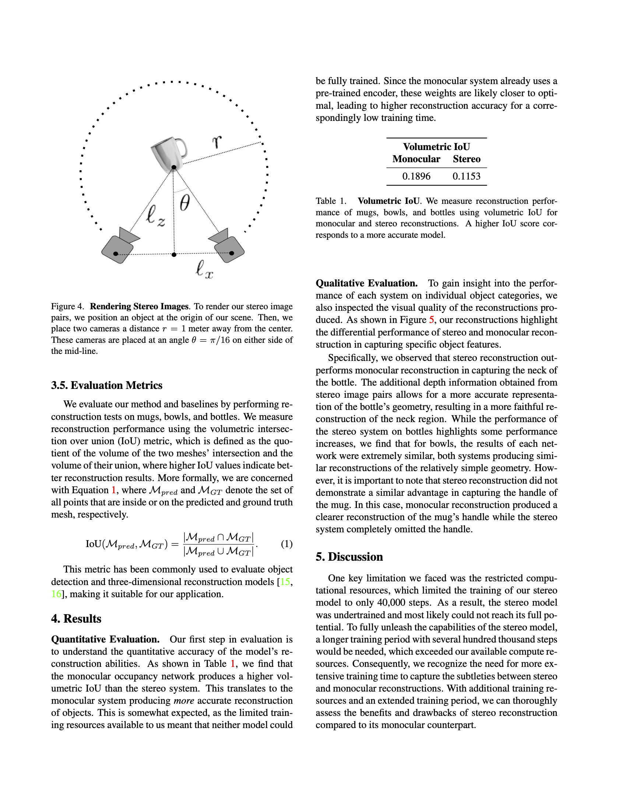
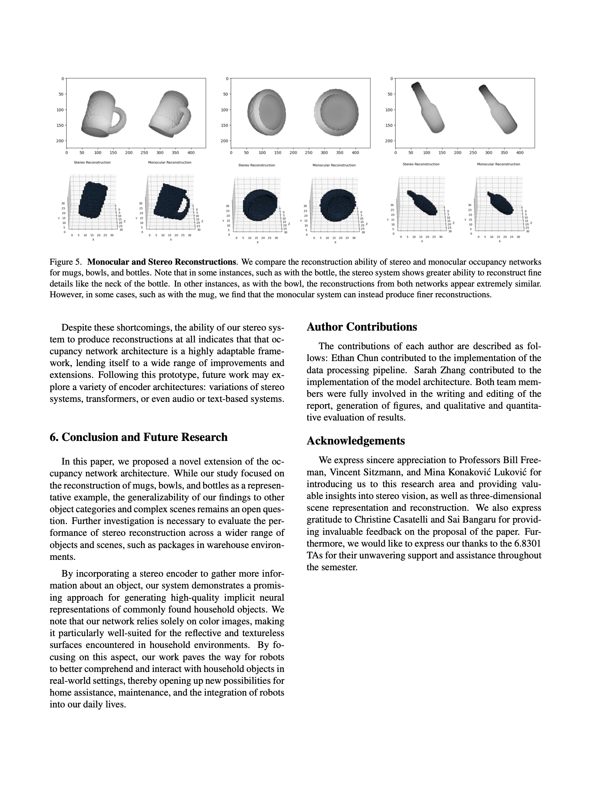
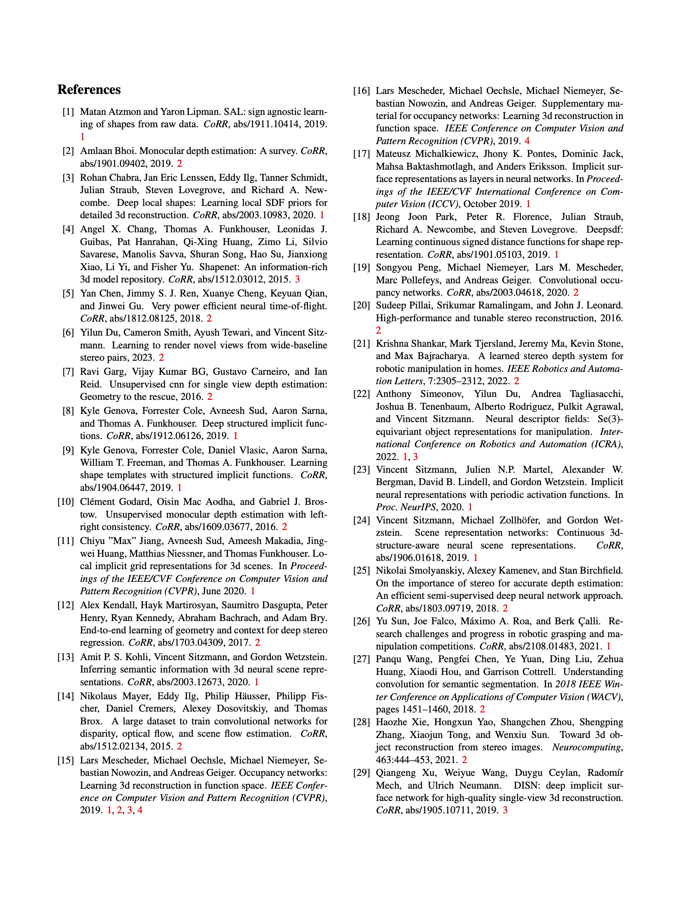

Stereo Occupancy Networks
Ethan Chun and Sarah Zhang
Abstract
- Context: Current algorithms for three-dimensional implicit neural representations often use single images or point clouds as input data.
- Problem: The noise artifacts or lack of information from these data can degrade the robustness of their implicit representations.
- Solution: We propose an alternative approach that utilizes stereo input images with an occupancy network to create an implicit neural representation of household objects.
Results
We compare the reconstruction ability of both our stereo network and a monocular occupancy network.

Paper
Please see our paper for additional details on the project.





